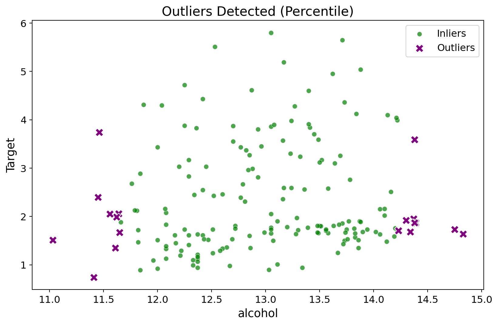
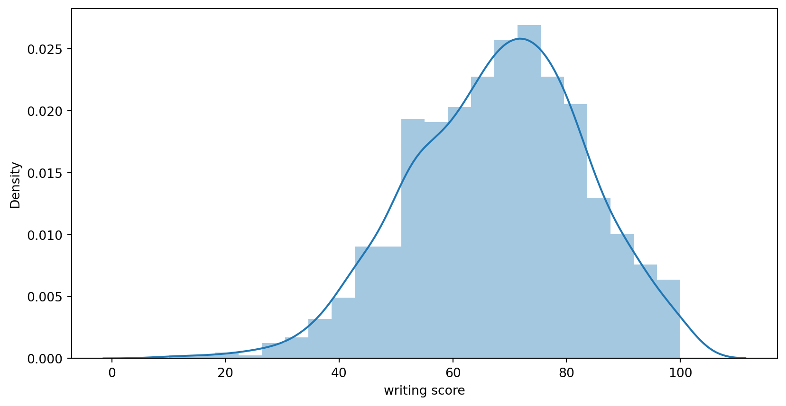
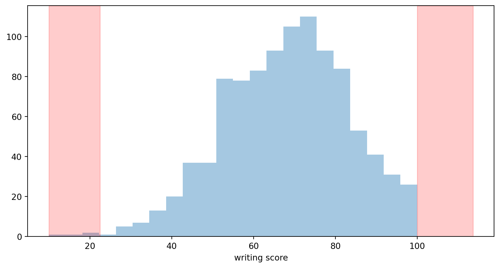

import numpy as np
import matplotlib.pyplot as plt
import seaborn as sns
from sklearn.datasets import load_wine
import scipy.statsIn the intricate landscape of data analysis, outliers emerge as the unconventional elements that refuse to conform. These peculiar data points, standing out from the crowd, can introduce significant distortions to the overall dataset. Whether stemming from errors, inconsistencies, or simply unique observations, managing outliers becomes a pivotal step in the process of data cleaning and preprocessing. This careful curation ensures that our analytical endeavors are built upon trustworthy and representative data.
The Significance of Outlier Detection:
Think of outlier detection as playing detective with our dataset. During the crucial phases of cleaning and preprocessing, where we address missing values and pinpoint outliers, it’s imperative to contextualize our actions. The decision to remove outliers should be influenced by the specific use case, as blindly discarding data points may not always align with the broader objectives. The ultimate aim is to bolster our model’s performance when faced with new or unseen data. 
Strategies for Outlier Detection:

- Using Standard Deviation: An approach grounded in setting limits based on standard deviations. Lower Limit: μ - 3σ, Upper Limit: μ + 3σ. Any data point beyond this range is flagged as an outlier. This method relies on the assumption that 99.7% of data falls within three standard deviations.
- Using Z-score: Standard deviation is a metric of variance, i.e., how much the individual data points are spread out from the mean. In statistics, if a data distribution is approximately normal, then about 68% of the data values lie within one standard deviation of the mean and about 95% are within two standard deviations, and about 99.7% lie within three standard deviations. The Z-score is the signed number of standard deviations by which the value of an observation or data point is above the mean value of what is being observed or measured. The intuition behind the Z-score is to describe any data point by finding its relationship with the Standard Deviation and Mean of the group of data points. Z-score is finding the distribution of data where mean is 0 and standard deviation is 1, i.e., normal distribution. You must be wondering how this helps in identifying the outliers. While calculating the Z-score, we re-scale and center the data and look for data points that are too far from zero. These data points, which are way too far from zero, will be treated as the outliers. In most cases, a threshold of 3 or -3 is used, i.e., if the Z-score value is greater than or less than 3 or -3, respectively, that data point will be identified as an outlier. This technique assumes a Gaussian distribution of the data. The outliers are the data points that are in the tails of the distribution and therefore far from the mean. How far depends on a set threshold for the normalized data points calculated with the formula:
An outlier is then a normalized data point that has an absolute value greater than z(thr). That is |z(score)| > z(thr). Commonly used Z(thr) values are 2.5, 3.0, and 3.5. Here we will be using 3.0. For example, I’ll take up the Medical Cost Personal Datasets for explaining the Z-Score method.This technique assumes a Gaussian distribution of the data.
- Using IQR (Interquartile Range):
The concept of the Interquartile Range (IQR) is used to build the boxplot graphs. IQR is a concept in statistics that is used to measure the statistical dispersion and data variability by dividing the dataset into quartiles.In simple words, any dataset or any set of observations is divided into four defined intervals based upon the values of the data and how they compare to the entire dataset. A quartile is what divides the data into three points and four intervals.It is the difference between the third quartile and the first quartile (IQR = Q3 - Q1). Outliers in this case are defined as the observations that are below (Q1−1.5×IQR) or above (Q3+1.5×IQR) or boxplot lower whisker or above boxplot upper whisker. It can be visually represented by the box plot.
Focused on the central 50% of data. Outliers are identified outside the range[q25−1.5×IQR,q75+1.5×IQR]
 https://www.kdnuggets.com/2019/11/understanding-boxplots.html
https://www.kdnuggets.com/2019/11/understanding-boxplots.html
- Using Percentile:Leveraging percentiles to isolate outliers outside the interquartile range.Outliers are discarded if they stray beyond the confines of [q25−1.5×IQR,q75+1.5×IQR]. In the intricate dance of data analysis, the ability to detect and navigate outliers is akin to mastering a subtle art. Employing techniques such as standard deviation, z-score, IQR, and percentiles empowers us to pinpoint and manage anomalies with finesse. The choice of method is nuanced, guided by the unique characteristics of the dataset and the specific demands of the analysis. By embracing the challenge of outlier detection, we fortify our data’s integrity, ensuring it stands resilient and poised for insightful revelations. More Content: Outliers can have many causes, such as: Measurement or input error. Data corruption. True outlier observation. There is no precise way to define and identify outliers in general because of the specifics of each dataset. Instead, you, or a domain expert, must interpret the raw observations and decide whether a value is an outlier or not. Nevertheless, we can use statistical methods to identify observations that appear to be rare or unlikely given the available data. This does not mean that the values identified are outliers and should be removed. A good tip is to consider plotting the identified outlier values, perhaps in the context of non-outlier values to see if there are any systematic relationships or patterns to the outliers.
Types of Outliers:
Outliers can be of two types:
- Univariate
- Multivariate.
Univariate outliers can be found when we look at the distribution of a single variable. Multivariate outliers are outliers in an n-dimensional space. In order to find them, you have to look at distributions in multi-dimensions. Let us understand this with an example. Let’s say we are understanding the relationship between height and weight. Below, we have univariate and bivariate distribution for Height and Weight. Take a look at the box plot. We do not have any outliers (above and below 1.5 * IQR, a common method). Now look at the scatter plot. Here, we have two values below and one above the average in a specific segment of weight and height.
Impact of Outliers on a Dataset: Outliers can drastically change the results of data analysis and statistical modeling. There are numerous unfavorable impacts of outliers in the dataset: It increases the error variance and reduces the power of statistical tests. If the outliers are non-randomly distributed, they can decrease normality. They can bias or influence estimates that may be of substantive interest. They can also impact the basic assumption of Regression, ANOVA, and other statistical model assumptions. To understand the impact deeply, let’s take an example to check what happens to a dataset with and without outliers in the dataset.
Code : For percentile 1. Import all the libraries
- Load and clean the dataset
# Load the Wine dataset
wine = load_wine()
data = wine.data
feature_names = wine.feature_names- Finding the percentile
# Function for outlier detection using Percentile
def detect_outliers_percentile(data, feature_index, lower_percentile=5, upper_percentile=95):
feature_data = data[:, feature_index]
lower_bound = np.percentile(feature_data, lower_percentile)
upper_bound = np.percentile(feature_data, upper_percentile)
outliers = data[(feature_data < lower_bound) | (feature_data > upper_bound)]
return outliers
# Example usage:
# Outlier detection using Percentile
percentile_outliers = detect_outliers_percentile(data, feature_index=0)- Visualization
# Function for plotting the data and outliers
def plot_data_with_outliers(data, outliers, feature_name, method_name, title):
plt.figure(figsize=(10, 6))
sns.scatterplot(x=data[:, 0], y=data[:, 1], label='Inliers', color='green', alpha=0.7)
sns.scatterplot(x=outliers[:, 0], y=outliers[:, 1], label='Outliers', color='purple', marker='X', s=100)
plt.title(f'{title} ({method_name})', fontsize=16)
plt.xlabel(feature_name, fontsize=14)
plt.ylabel('Target', fontsize=14)
plt.xticks(fontsize=12)
plt.yticks(fontsize=12)
plt.legend(fontsize=12)
plt.show()
# Plotting the original data and outliers detected using Percentile
plot_data_with_outliers(data, percentile_outliers, feature_name=feature_names[0], method_name='Percentile', title='Outliers Detected')
For Standard Deviation Download the dataset from : https://www.kaggle.com/datasets/spscientist/students-performance-in-exams
- Import libraries
import pandas as pd- Read the dataset
df_2 = pd.read_csv("StudentsPerformance.csv")
df_2.head()| gender | race/ethnicity | parental level of education | lunch | test preparation course | math score | reading score | writing score | |
|---|---|---|---|---|---|---|---|---|
| 0 | female | group B | bachelor's degree | standard | none | 72 | 72 | 74 |
| 1 | female | group C | some college | standard | completed | 69 | 90 | 88 |
| 2 | female | group B | master's degree | standard | none | 90 | 95 | 93 |
| 3 | male | group A | associate's degree | free/reduced | none | 47 | 57 | 44 |
| 4 | male | group C | some college | standard | none | 76 | 78 | 75 |
- Standard deviation
def out_std(df, column):
global lower,upper
# calculate the mean and standard deviation of the data frame
data_mean, data_std = df[column].mean(), df[column].std()
# calculate the cutoff value
cut_off = data_std * 3
# calculate the lower and upper bound value
lower, upper = data_mean - cut_off, data_mean + cut_off
print('The lower bound value is', lower)
print('The upper bound value is', upper)
# Calculate the number of records below and above lower and above bound value respectively
df1 = df[df[column] > upper]
df2 = df[df[column] < lower]
return print('Total number of outliers are', df1.shape[0]+ df2.shape[0])out_std(df_2,'writing score')The lower bound value is 22.46702896739105
The upper bound value is 113.64097103260895
Total number of outliers are 4- Visualization
plt.figure(figsize = (10,5))
sns.distplot(df_2['writing score'])C:\Users\gayat\AppData\Local\Temp\ipykernel_18120\1994446283.py:2: UserWarning:
`distplot` is a deprecated function and will be removed in seaborn v0.14.0.
Please adapt your code to use either `displot` (a figure-level function with
similar flexibility) or `histplot` (an axes-level function for histograms).
For a guide to updating your code to use the new functions, please see
https://gist.github.com/mwaskom/de44147ed2974457ad6372750bbe5751
<Axes: xlabel='writing score', ylabel='Density'>
plt.figure(figsize = (10,5))
sns.distplot(df_2['writing score'], kde=False)
plt.axvspan(xmin = lower,xmax= df_2['writing score'].min(),alpha=0.2, color='red')
plt.axvspan(xmin = upper,xmax= df_2['writing score'].max(),alpha=0.2, color='red')C:\Users\gayat\AppData\Local\Temp\ipykernel_18120\3774281472.py:2: UserWarning:
`distplot` is a deprecated function and will be removed in seaborn v0.14.0.
Please adapt your code to use either `displot` (a figure-level function with
similar flexibility) or `histplot` (an axes-level function for histograms).
For a guide to updating your code to use the new functions, please see
https://gist.github.com/mwaskom/de44147ed2974457ad6372750bbe5751
<matplotlib.patches.Polygon at 0x2827dfb4790>